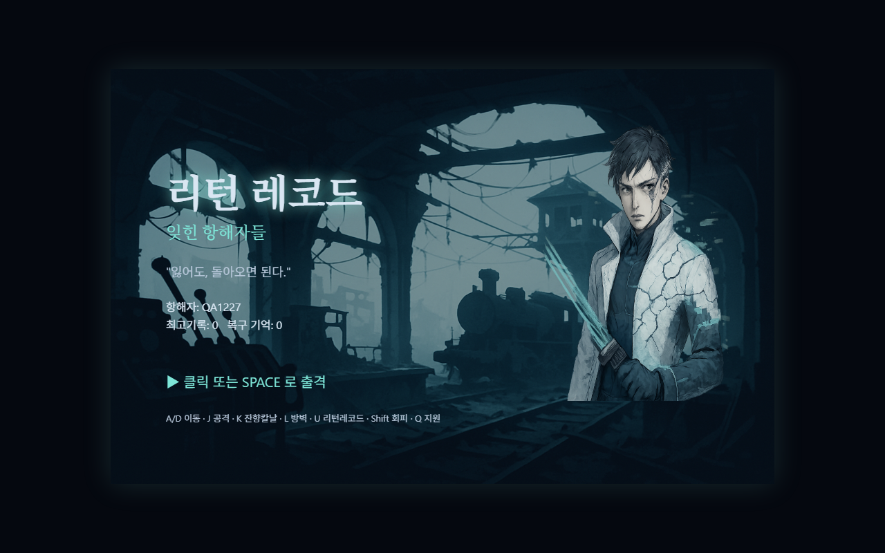
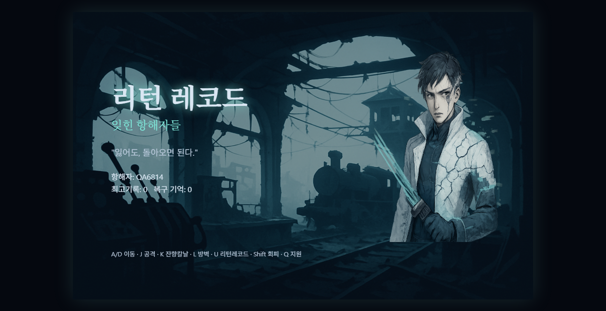
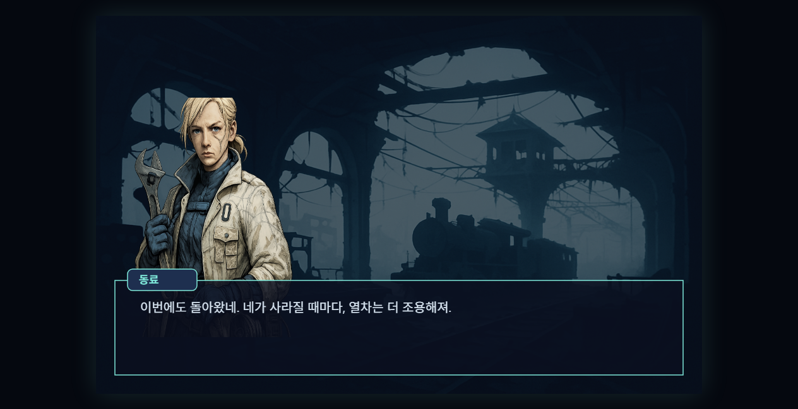
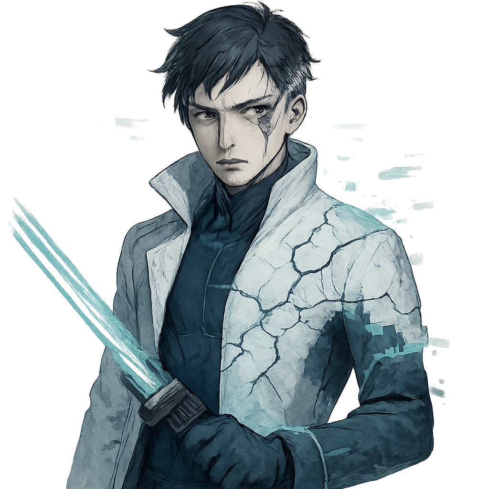
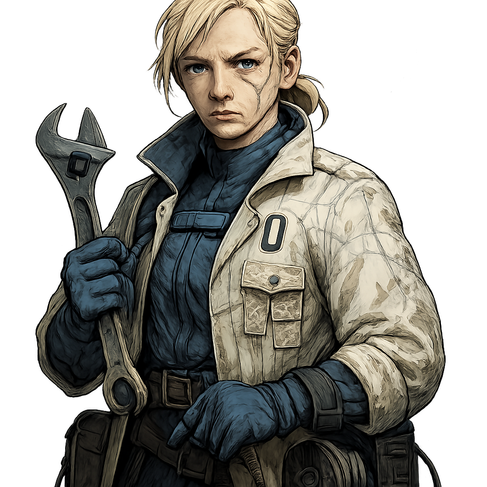
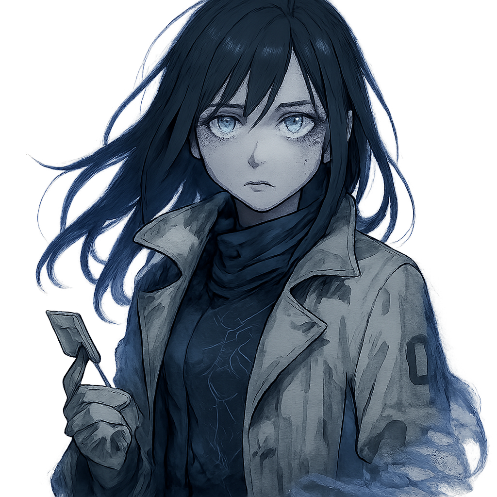
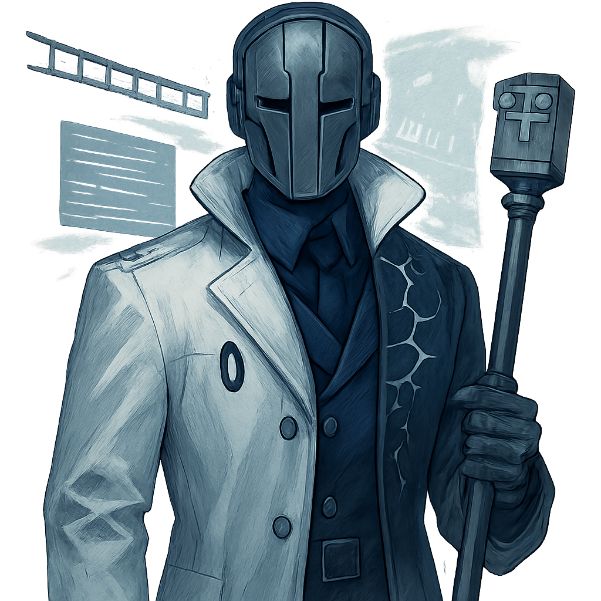
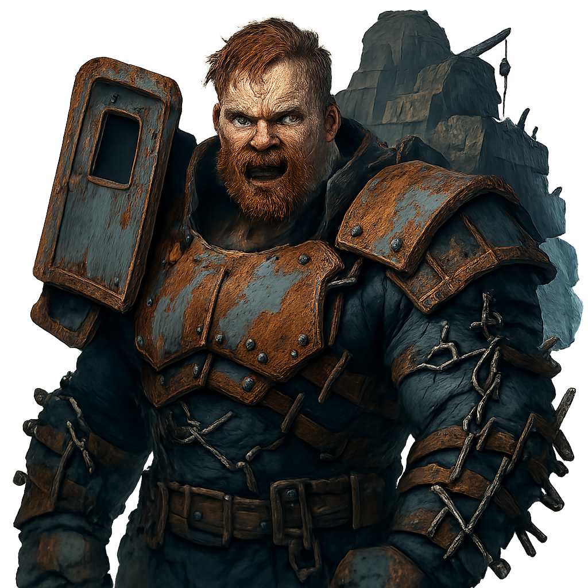
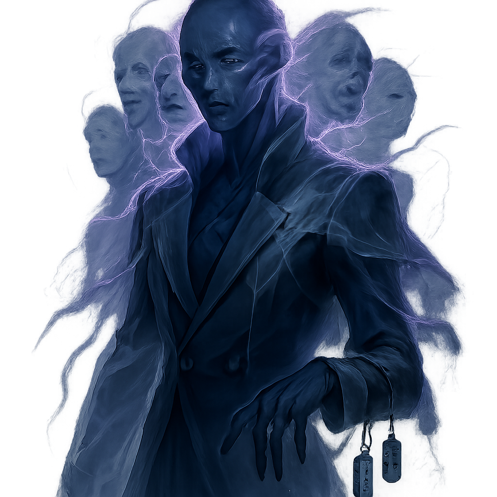

리턴 레코드: 잊힌 항해자들
리턴 레코드: 잊힌 항해자들
기억을 잃은 ‘돌아오는 항해자’가 폐허가 된 아르카디아 호를 되감는 루프 속에서 동료와 함께 출격하며, 기억 조각과 전투 기술을 회수해 자신과 열차의 이름을 되찾는 짧고 밀도 높은 스토리 액션 게임.
2D 캐릭터 액션 로그라이크 + VN 하이브리드 폐허와 로맨스가 공존하는 포스트-아포칼립스 액션 판타지. 짧고 강한 전투, 차갑지만 감정적인 대사, 반복 속에서 선명해지는 상실과 동료애. Story Single-player AI-made
▶ 지금 플레이



세계관
세계는 사라진 노선 위를 끝없이 되감는 유랑 거점 열차와 관제함 ‘아르카디아 호’에 갇혀 있다. 열차가 지나는 바깥은 모든 이동과 기록이 멈춘 정지 구역, 안쪽은 유일하게 앞으로 나아가는 항로다. 그러나 노선은 붕괴했고, 정거장들은 폐허가 되었으며, 기억을 먹는 존재들이 선로와 객실 사이를 점거해 사람과 기록을 뒤섞어 버린다. 플레이어는 기억을 잃고도 매번 돌아오는 항해자로서, 열차의 심장부에서 출격해 폐역을 돌파하고 다음 기록을 복원해 나간다. 아르카디아 호의 관제 시스템이 붕괴한 뒤, 잃어버린 항로의 핵심 기록을 둘러싸고 세 세력이 충돌한다. 관제기관 잔당은 노선 복구와 기억 통제를 원하고, 약탈 군단은 폐선 구역을 점거해 자원과 승객을 빼앗으며, 잊힌 승객들은 기억을 삼켜 자신의 형태를 유지하려 한다. 플레이어는 ‘돌아오는 항해자’로서 매 출격마다 기억을 회수하고 노선을 확장하며, 결국 이 열차가 왜 계속 되감기는지, 그리고 자신의 이름이 왜 기록에서 지워졌는지 밝혀야 한다.
- 아르카디아 호는 원래 ‘이동하는 관제함’이자 마지막 항해 기록소였다. 노선 전체를 관리하던 중심 AI가 침묵한 뒤, 열차는 죽지 못한 채 같은 구간을 반복한다.
- 정지 구역은 열차 밖의 폐허 지대다. 그곳에서는 이동도 복구도 느리게 멈추며, 선로를 벗어난 오래된 도시와 역사는 기억조차 흐려진다.
- 기억은 이 세계에서 연료이자 좌표이며, 무기의 형태를 결정하는 데이터다. 주인공이 죽을수록 강해지는 이유는 ‘부활’이 아니라 열차에 남은 기록 조각이 되돌아오기 때문이다.
- 동료는 단순한 동행자가 아니라, 서로의 잃어버린 기록을 붙잡아 주는 ‘항해 조합’이다. 같은 출격이라도 조합에 따라 전투 스타일과 대사가 달라진다.
- 잊힌 승객들은 한때 열차를 탔던 사람들 혹은 그 기록의 잔해다. 그들은 마지막으로 남은 이름을 지키기 위해 타인의 기억을 훔친다.
캐릭터

번호-0
기록이 지워진 항해자
리턴 레코드 - 쓰러진 자리의 기억 잔향을 무기와 방어막으로 재생하고, 직전 전투의 동작 하나를 되감아 즉시 연계 공격으로 이어간다.

세이프
정비관 겸 노선 복구 담당
청백 복구선 - 전투 중 파손된 경로를 즉시 복원해 아군의 이동 루트와 쿨다운 회복을 열어 주고, 차단된 문과 레일을 임시 개통한다.

루나
기억 해석자
잔향 해독 - 적의 기억 패턴과 숨은 약점을 읽어 보스 페이즈를 미리 표시하고, 환영 분신을 남겨 공격 방향을 왜곡한다.

감찰관 아델
기록 삭제 집행관
기록 말소령 - 전장에 기록 봉인을 겹겹이 내려 플레이어의 버프와 직전 빌드 일부를 잠시 무효화하고, 삭제된 스킬 자리에 빈 공백 폭발을 일으킨다.

적루왕 브락
선로 성채의 약탈두목
철차 강탈돌격 - 객차 잔해를 추진체처럼 폭발시켜 돌진하고, 전장을 가르는 충돌 파동으로 아군의 자원 회복 구간까지 파괴한다.

무명 승객
이름을 훔치는 최종 표류자
이름 도둑질 - 플레이어의 최근 출격 스킬 하나를 복제해 사용하고, 명중 시 이름표 같은 표식을 남겨 해당 전투에서 일부 능력을 잠식한다.
주요 특징
- 기본공격: 3타 콤보, 3타째 적중 시 소량의 기억 게이지 획득
- 회피/대시: 짧은 무적 프레임, 완벽 회피 시 다음 스킬 쿨다운 소폭 감소
- 스킬 게이지: 적 처치/완벽 회피/기억 조각 획득으로 충전
- 스테이지 규칙 1개 고정: 폐역은 회피 학습, 선로는 이동 루트 복구, 객차는 복제/기억 관리, 관제함은 말소/반전 기믹
- 동료 지원 스킬은 1회성 쿨다운 발동으로만 사용 가능
- 런 종료 후 기억 복구로 신규 스킬, 대사, 패시브가 해금
- 적 패턴은 소수 정예 중심, 웨이브는 짧고 밀도 높게 구성
- 보스전은 2~3페이즈, 각 페이즈마다 핵심 패턴 1개 추가
- 출격 전후 VN은 각 1장면, 새 정보 1개와 관계 변화 1개만 전달
- HTML5 canvas 단일 파일 구현을 위해 동시 화면 적 수와 투사체 수를 제한
- 번호-0: 리턴 레코드 — 직전 행동 1개를 강화 복제하는 대표기술. 쿨다운 8초. 키: U. 예) 회피 후 발동 시 잔향 돌진 반격, 기본공격 후 발동 시 마지막 타격을 분신이 재현, 스킬 후 발동 시 해당 스킬의 축소판 재시전.
- 번호-0: 잔향 칼날 — 전방으로 짧은 사거리의 연속 베기, 적중 시 기억 게이지 추가 획득. 쿨다운 6초. 키: K.
- 번호-0: 되감기 방벽 — 짧은 시간 방어막 생성 후 파괴 시 주변에 충격파. 방어 성공 시 일부 피해를 되돌려 적중. 쿨다운 10초. 키: L.
- 세이프 지원: 청백 복구선 — 전장에 복구 구역을 깔아 4초간 이동 속도 상승, 쿨다운 회복 가속, 탄환/에너지 일부 회수 중 하나를 선택 발동. 쿨다운 18초. 키: Q.
- 루나 지원: 잔향 해독 — 보스의 다음 페이즈 패턴을 1개 사전 표시하고, 3초간 환영 분신을 생성해 적의 조준을 왜곡. 쿨다운 20초. 키: Q(조합에 따라 세이프와 교체).
- 패시브 기억 복구 — 런마다 획득한 기억 조각 수에 따라 최대 체력/스킬 쿨다운/되감기 강화 중 하나가 소폭 상승.
- 각 스테이지 종료 시 3택 업그레이드를 제공한다. 선택지는 공격/생존/전술 중 하나씩 의미 있게 갈라진다. 예시: 1) 잔향 칼날 강화 A: 사거리 +20% / B: 적중 시 기억 게이지 +1 / C: 마지막 타격이 관통화. 2) 되감기 방벽 강화 A: 방어막 지속 +2초 / B: 완벽 방어 시 쿨다운 30% 감소 / C: 파괴 시 폭발 범위 증가. 3) 리턴 레코드 강화 A: 직전 행동 복제 대신 2초 전 행동까지 확대 / B: 복제 시 무적 0.3초 추가 / C: 복제 성공 시 다음 스킬 비용 절반. 4) 동료 선택 분기: 세이프와 함께하면 루트 개통·쿨감 중심, 루나와 함께하면 페이즈 예고·약점 노출 중심. 5) 아델 보스전 대응 선택: 봉인된 스킬 1개를 즉시 포기하고 안전 버프 획득 vs 봉인 유지 후 공백 폭발을 회피하며 큰 보상 획득. 이 선택은 단순 수치가 아니라 플레이 스타일과 다음 런 빌드 방향을 바꾼다.
조작
이동 A/D 또는 방향키, 점프 없음, 기본공격 J, 스킬 K/L/U(또는 3키 슬롯), 회피/대시 Shift, 동료 지원 스킬 Q, 상호작용/확인 Enter, 대화 넘김 Space. 모바일 대응은 가상 조이스틱 + 4버튼으로 축약 가능하도록 설계한다.
품질
비전 83/100
재미 64/100
스토리 72/100
기능 통과
출시 적합 아니오